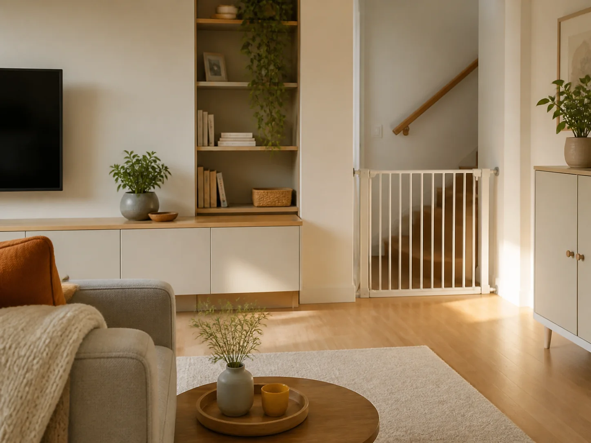
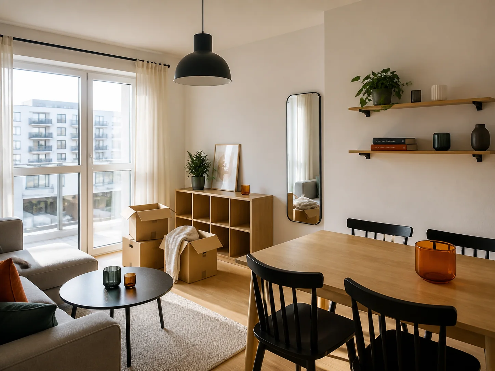

Usługi domowe · Warszawa
Domowe naprawy
bez stresu.
ABIBOK zajmie się domowymi sprawami, a Ty zachowasz czas na to, co naprawdę ważne.
WarszawaJasne zasadyWizyta od 300 zł
✓ Gotowe.Teraz możesz zająć się czymś ważniejszym.
Usługi domowe
W czym możemy Ci pomóc?
Nie musisz znać nazwy usługi. Wybierz obszar albo po prostu opisz nam, co trzeba zrobić.
⌁
Montaż i mocowanie
Lustra, półki, karnisze, uchwyty TV i inne elementy wyposażenia.
Sprawdź → ◇Drobne naprawy domowe
Klamki, zawiasy, regulacje, mocowania i drobne usterki.
Sprawdź → ▱Meble
Składanie, montaż, regulacja i drobne naprawy mebli.
Sprawdź → ◯Hydraulika
Baterie, syfony, odpływy, podłączenia i drobne usterki.
Sprawdź → ϟElektryka
Oświetlenie, gniazdka, włączniki i drobne prace elektryczne.
Sprawdź → ⌂Łazienka i kuchnia
Akcesoria, uszczelnienia, silikon, mocowania i drobne poprawki.
Sprawdź →ABIBOK.Twój czas.Twój spokój.
Ty zajmij się tym, co jest dla Ciebie ważne. Resztą zajmie się ABIBOK.
01
Prosty kontakt
Opisz problem lub wyślij zdjęcie.
02
Jasne zasady
Wiesz, co zostanie zrobione i ile będzie kosztować.
03
Termin, który Ci odpowiada
Ustalamy dogodny termin wizyty.
04
Jedna wizyta. Wiele drobnych spraw.
Przygotuj listę — możemy zająć się kilkoma rzeczami.
Prosty proces
Jak to działa?
Cztery proste kroki. Resztą zajmie się ABIBOK.
01
Opisz, czego potrzebujesz
Napisz krótko i dodaj zdjęcia.
02
Ustalamy szczegóły
Potwierdzamy zakres, cenę i termin.
03
ABIBOK przyjeżdża
Zajmujemy się Twoją listą.
04
Gotowe
Odzyskujesz swój czas i spokój.
Bez długiego cennika
Ile to kosztuje?
Prosto, jasno i bez drobnego druku.
od 300 zł
Wizyta specjalisty
Do 1 godziny pracy.
od 100 zł
Każda kolejna godzina
Jeśli potrzebujesz więcej czasu.
od 400 zł
Prace elektryczne
Wymagane kwalifikacje.
Materiały, jeśli są potrzebne, rozliczane są oddzielnie.
Znasz przewidywany koszt przed wizytą.
Przed rozpoczęciem pracy potwierdzamy zakres oraz przewidywaną cenę. Bez niespodzianek.
Nie tylko pojedyncza usługa
ABIBOK dla Ciebie
Nie zawsze potrzebujesz konkretnej usługi. Czasem po prostu chcesz mieć problem z głowy.


Pomoc po przeprowadzce
Zajmiemy się tym, co zostało do zamontowania i wyregulowania.
Dowiedz się więcej →Masz inną sytuację?
Nie musisz dopasowywać problemu do kategorii.
Standard ABIBOK
Nasza obietnica
Chcemy, żeby korzystanie z ABIBOK było tak proste, jak samo złożenie zgłoszenia.
01
Ustalona cena
Zmianę zakresu najpierw uzgodnimy z Tobą.
02
Właściwe kwalifikacje
Tam, gdzie są wymagane, pracuje odpowiedni specjalista.
03
Szacunek do Twojego domu
Dbamy o mieszkanie i wyposażenie.
04
Porządek po pracy
Kończymy pracę — zostawiamy porządek.
05
Odpowiedzialność
Odpowiadamy za jakość usług ABIBOK.
FAQ
Najczęściej zadawane pytania
Masz pytanie? Być może odpowiedź jest już tutaj.
Tak. Przygotuj listę drobnych prac, a postaramy się wykonać je podczas jednej wizyty.
Tak. Zdjęcia pomagają ocenić zakres pracy i przygotować się do wizyty.
Od 300 zł za wizytę obejmującą do jednej godziny pracy. Każda kolejna godzina od 100 zł.
Przed wizytą potwierdzamy zakres prac oraz przewidywany koszt.
Nie. Potrzebne materiały i części rozliczamy oddzielnie.
Tak. Prace wymagające kwalifikacji wykonuje specjalista posiadający wymagane uprawnienia. Ceny od 400 zł.
Obecnie na terenie Warszawy. W przyszłości planujemy kolejne miasta.
Opisz nam, czego potrzebujesz, i dodaj zdjęcie. Sprawdzimy, jak możemy pomóc.
Przez formularz na stronie, telefonicznie lub przez WhatsApp.
ABIBOK zajmie się tym za Ciebie
Masz coś do zrobienia w domu?
Nie odkładaj tego na później.